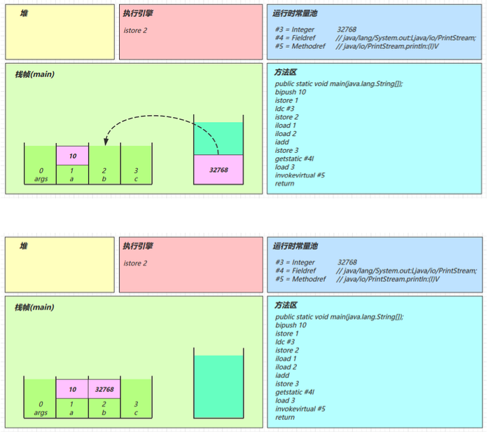

1 内存结构
Java 虚拟机在执行 Java 程序的过程中会把它管理的内存划分成若干个不同的数据区域。JDK 1.8 和之前的版本略有不同：


线程私有：
- 程序计数器
- 虚拟机栈
- 本地方法栈
线程共享：
- 堆
- 方法区
- 直接内存
1.1 程序计数器

Program Counter Register，程序计数器(寄存器)是一块较小的内存空间，可以看作是当前线程所执行的字节码的行号指示器。
作用：
- 记住下一条jvm指令的执行地址。字节码解释器工作时通过改变这个计数器的值来选取下一条需要执行的字节码指令，分支、循环、跳转、异常处理等功能都需要依赖这个计数器来完成。
- 在多线程的情况下，程序计数器用于记录当前线程执行的位置，从而当线程被切换回来的时候能够知道该线程上次运行到哪儿了，从而能够恢复线程的运行。
特点：
是线程私有的。
不会存在内存溢出。
1.2 虚拟机栈
Java Virtual Machine Stacks，Java虚拟机栈
- 每个线程运行时所需要的内存，称为虚拟机栈。
- 每个栈由多个栈帧(Frame)组成，对应着每次方法调用时所占用的内存。每执行一个方法，该方法对应的栈帧就会被push进虚拟机栈，该方法执行完毕栈帧就被pop，如果该方法内部调用了其他方法，也会继续push进被调用的方法。
- 每个线程只能有一个活动栈帧，对应着当前正在执行的那个方法。
每个栈帧中都拥有：
- 局部变量表：存放了编译期可知的各种数据类型（基本数据类型）、对象引用（reference 类型，它不同于对象本身，可能是一个指向对象起始地址的引用指针，也可能是指向一个代表对象的句柄或其他与此对象相关的位置）。局部变量表以变量槽(slot)为最小单位，一个变量槽最大只允许保存四字节(即32位)长度的变量。如果超过32位，则会开辟两个连续的slot。
- 操作数栈：作为方法调用的中转站使用，用于存放方法执行过程中产生的中间计算结果。另外，计算过程中产生的临时变量也会放在操作数栈中。
- 动态链接：服务于一个方法需要调用其他方法的场景。在 Java 源文件被编译成字节码文件时，所有的变量和方法引用都作为符号引用（Symbilic Reference）保存在 .class 文件的常量池里。当一个方法要调用其他方法，需要将常量池中指向方法的符号引用转化为其在内存地址中的直接引用，这部分引用就称为动态链接。
- 方法返回地址：方法执行完(不论是正常执行还是发生了异常)后需要返回到方法被调用的位置，程序才能继续执行，方法返回时还可能需要在栈帧中保存一些信息，用来帮助恢复上层方法的执行状态。
问题：
- 垃圾回收是否涉及栈内存?
不涉及，GC只涉及堆内存，栈内存只是简单地保存调用的方法。
- 栈内存分配越大越好吗?
不是。栈内存越大，线程数越小，因为栈内存属于单个线程，而物理内存大小是有限的。
- 方法内的局部变量是否线程安全?
如果方法内局部变量没有逃离方法的作用范围，它是线程安全的。
如果是局部变量引用了对象，并逃离方法的作用范围（其他线程也访问了该对象），需要考虑线程安全。
栈内存溢出
StackOverFlowError： 若栈的内存大小不允许动态扩展，那么当线程请求栈的深度超过当前 Java 虚拟机栈的最大深度的时候，就抛出 StackOverFlowError 错误。比如方法的递归调用，或者第三方库的调用（比如Json解析）。OutOfMemoryError： 如果栈的内存大小可以动态扩展， 如果虚拟机在动态扩展栈时无法申请到足够的内存空间，则抛出OutOfMemoryError异常。
线程诊断
案例1：CPU占用过多
定位：
top：Linux命令，定位哪个进程对CPU的占用过高。ps H -eo pid,tid,%cpu | grep 进程id：Linux命令，用ps命令进一步定位是哪个线程引起的cpu占用过高。jstack 进程id：JDK命令，可以根据线程id找到有问题的线程，进一步定位到问题代码的源码行号。
案例2：程序运行很长时间没有结果
定位：
jstack 进程id- 大概率是发生了死锁。
1.3 本地方法栈

和虚拟机栈所发挥的作用非常相似，区别是虚拟机栈为虚拟机执行 Java 方法 （也就是字节码）服务，而本地方法栈则为虚拟机使用到的 native 方法服务。
本地方法即native关键字修饰的方法，一般是需要和系统底层交互的方法，通过C或C++实现，比如Object类中的许多方法，clone()，hashcode()，notify()，notifyall()，wait()等。
本地方法被执行的时候，在本地方法栈也会创建一个栈帧，用于存放该本地方法的局部变量表、操作数栈、动态链接、出口信息。方法执行完毕后相应的栈帧也会出栈并释放内存空间，也会出现 StackOverFlowError 和 OutOfMemoryError 两种错误。
本地方法栈在 HotSpot 虚拟机中和 Java 虚拟机栈合二为一。
1.4 堆
Java 虚拟机所管理的内存中最大的一块，Java 堆是所有线程共享的一块内存区域，在虚拟机启动时创建。此内存区域的唯一目的就是存放对象实例，几乎所有的对象实例以及数组都在这里分配内存。
之所以说几乎，是因为随着 JIT 编译器的发展与逃逸分析技术逐渐成熟，栈上分配、标量替换优化技术将会导致一些微妙的变化。从 JDK 1.7 开始已经默认开启逃逸分析：如果某些方法中的对象引用没有被返回或者未被外面使用（也就是未逃逸出去），那么对象可以直接在栈上分配内存。
特点：
- 堆是线程共享的，堆中对象都需要考虑线程安全的问题。
- 有垃圾回收机制。因为现在的垃圾回收器基本都采用分代垃圾回收算法，所以 Java 堆还可以近一步细分（第二章GC会解释）。
堆内存溢出
即OutOfMemoryError。对象可以被垃圾回收机制回收，但是如果对象一直处于被使用状态，就一直无法被回收，当这样的对象大量存在时，就会出现堆内存溢出现象。
OOM有不同的表现形式：
- java.lang.OutOfMemoryError: GC Overhead Limit Exceeded：当 JVM 花太多时间执行垃圾回收并且只能回收很少的堆空间时，就会发生此错误。
- java.lang.OutOfMemoryError: Java heap space：假如在创建新的对象时, 堆内存中的空间不足以存放新创建的对象, 就会引发此错误。
- ……
堆内存诊断
- jps工具：查看当前系统中有哪些java进程。
- jmap工具：查看堆内存占用情况。
jmap - heap 进程id - jconsole工具：图形界面的，多功能的监测工具，可以连续监测。
- jvisualvm工具：图形界面，和jconsole功能类似，可以抓取内存信息快照。
1.5 方法区
Oracle的JVM规范中对方法区有详细定义：
The Java Virtual Machine has a method area that is shared among all Java Virtual Machine threads. The method area is analogous to the storage area for compiled code of a conventional language or analogous to the “text” segment in an operating system process. It stores per-class structures such as the run-time constant pool, field and method data, and the code for methods and constructors, including the special methods (§2.9) used in class and instance initialization and interface initialization.
The method area is created on virtual machine start-up. Although the method area is logically part of the heap, simple implementations may choose not to either garbage collect or compact it. This specification does not mandate the location of the method area or the policies used to manage compiled code. The method area may be of a fixed size or may be expanded as required by the computation and may be contracted if a larger method area becomes unnecessary. The memory for the method area does not need to be contiguous.
当虚拟机要使用一个类时，它需要读取并解析 Class 文件获取相关信息，再将信息存入到方法区。方法区会存储：已被虚拟机加载的类信息、字段信息、方法信息、常量、静态变量、即时编译器编译后的代码缓存等数据。
方法区是 JVM 运行时数据区域的一块逻辑区域，是各个线程共享的内存区域。所谓的逻辑区域，即JVM规范只是规定了有方法区这么个概念和它的作用，方法区到底要如何实现那就是虚拟机自己要考虑的事情了，在不同的虚拟机实现上，方法区的实现是不同的。
组成
JDK 1.6中，method area在实际实现时通过PermGen即永久代来实现，属于堆内存的一部分，存储运行时常量池、类的信息以及类加载器。
JDK 1.8之后，PermGen的实现被废弃，开始使用Metaspace即元空间来实现，不占用堆内存，即JVM不再负责管理方法区内存结构，而是移出到本地内存，由本地内存来进行管理。
问：为什么要将永久代 (PermGen) 替换为元空间 (MetaSpace) 呢?
- 整个永久代有一个 JVM 本身设置的固定大小上限，无法进行调整，而元空间使用的是直接内存，虽然受本机可用内存的限制，仍旧可能溢出，但是比原来出现的几率会更小，这样能加载的类就更多了。
方法区内存溢出
1.8以前会导致永久代内存溢出
* 演示永久代内存溢出
java.lang.OutOfMemoryError: PermGen space
* -XX:MaxPermSize=8m1.8之后会导致元空间内存溢出
* 演示元空间内存溢出
java.lang.OutOfMemoryError: Metaspace
* -XX:MaxMetaspaceSize=8m场景：Spring或MyBatis框架，用cjlib实现动态代理，会产生很多字节码即class文件，class文件过多就会导致方法区内存溢出。
运行时常量池
二进制的字节码文件即class文件的组成包括：
- 类的基本信息：版本、字段、方法、接口等描述信息外
- 常量池
常量池 (Constant Pool Table) 就是一张表，由符号和该符号对应的信息组成。存放编译期生成的各种字面量（Literal）和符号引用（Symbolic Reference）。虚拟机指令根据这张常量表找到要执行的类名、方法名、参数类型、字面量等信息：
字面量（Literal）是源代码中的固定值的表示法，即通过字面我们就能知道其值的含义，包括整数、浮点数和字符串字面量。
符号引用（Symbolic Reference）包括类符号引用、字段符号引用、方法符号引用和接口方法符号引用。
常量池是*.class文件中的静态信息，当该类被加载，它的常量池信息就会放入运行时常量池，并把里面的符号地址变为真实地址。
既然运行时常量池是方法区的一部分，自然受到方法区内存的限制，当常量池无法再申请到内存时会抛出 OutOfMemoryError 错误。
StringTable
字符串常量池 StringTable 是 JVM 为了提升性能和减少内存消耗针对 String 类专门开辟的一块区域，主要目的是为了避免字符串的重复创建。
StringTable 本质上就是一个HashSet<String>，保存的是字符串对象的引用，字符串对象的引用指向堆中的字符串对象。
StringTable的特性：
- 常量池中的字符串仅是符号，第一次用到时才把字符串符号变为对象，并放入StringTable当中。
- 利用串池的机制，来避免重复创建字符串对象。
- 字符串变量拼接的原理是StringBuilder(1.8)。
- 字符串常量拼接的原理是编译期优化。
- 可以使用 intern 方法，主动将串池中还没有的字符串对象放入串池。
- 1.8将这个字符串对象尝试放入串池，如果有则并不会放入，如果没有则把自己的地址放入串池（浅拷贝），会把串池中的对象返回。
- 1.6将这个字符串对象尝试放入串池，如果有则并不会放入，如果没有会把此对象复制一份放入串池（深拷贝），会把串池中的对象返回。
面试题：
String s1 = "a"; // 用到时就加载到StringTable
String s2 = "b";
String s3 = "a" + "b";
String s4 = s1 + s2; // 运行期间确定，s1与s2是变量，结果可能变化，new StringBuilder().append("a").append("b").toString() = new String("ab")
String s5 = "ab"; // 编译期间确定，javac做优化，结果已经确定为ab
String s6 = s4.intern();
// 问
System.out.println(s3 == s4); // false
System.out.println(s3 == s5); // true
System.out.println(s3 == s6); // true
String x2 = new String("c") + new String("d"); // c和d是常量，被放入常量池，但是new出来的String是新的对象，放在堆。
String x1 = "cd";
x2.intern(); // 将这个字符串尝试放入串池，如果有则放入，如果没有则不会放入，然后返回串池中的对象。
// 问，如果调换了【最后两行代码】的位置呢，如果是jdk1.6呢
System.out.println(x1 == x2); // false，调换后1.8true，1.6false。StringTable的位置
1.6中，StringTable是常量池的一部分，随method area一起存放在PermGen中。
1.7开始，StringTable被放入了堆中，因为PermGen的内存回收效率很低，只有full gc才会触发，移动到堆中能改善方法区的内存不足问题。
StringTable垃圾回收
StringTable存在GC。
StringTable性能调优
StringTable的底层是Hash表，因此bucket的个数决定了StringTable的性能。
- 调整参数
-XX:StringTableSize = 桶个数，桶的个数越多，链表长度就越短，性能就越高。 - 考虑将字符串对象是否入池。如果程序使用大量且重复的字符串，可以将字符串入池，可以明显降低内存占用。
1.6 直接内存
直接内存（Direct Memory）并不是虚拟机运行时数据区的一部分，也不是虚拟机规范中定义的内存区域，不属于JVM管理，属于操作系统的内存。
特点：
- 常见于NIO操作时，用于数据缓冲区：JDK 1.4 中新加入的 NIO 类，引入了一种基于Channel 与 Buffer 的 I/O 方式，它可以直接使用 Native 函数库直接分配堆外内存，然后通过一个存储在 Java 堆中的 DirectByteBuffer 对象作为这块内存的引用进行操作。这样就能在一些场景中显著提高性能，因为避免了在 Java 堆和 Native 堆之间来回复制数据。
- 分配回收成本较高，但读写性能高。
- 不受JVM内存回收管理。
分配和回收原理
没有直接内存时，进行文件读取需要先拷贝到系统缓冲区，然后Java程序再把系统缓冲区内容拷贝到Java缓冲区。
直接内存被开辟为一块系统和Java程序都可以直接访问的内存区域，这样文件内容被操作系统拷贝到直接内存区域中，Java程序就可以直接读取，而不用再次拷贝。
使用Unsafe对象完成直接内存的分配与回收，并且回收需要主动调用freeMemory方法。
但是一般不需要开发者来创建和使用Unsafe对象，因为使用ByteBuffer（受JVM的GC管理）对象时，它的实现类DirectByteBuffer内部，使用了Cleaner（虚引用）来监测ByteBuffer对象，一旦ByteBuffer对象被垃圾回收，那么就会由ReferenceHandler线程（守护线程）通过Cleaner的clean方法调用freeMemory来释放直接内存。
做JVM调优的时候会加参数-XX:+DisableExplicitGC，即禁用掉显式的垃圾回收代码段，一旦禁用了显式垃圾回收，ByteBuffer对象即使没有人引用，也一直存活，只有等JVM自己来回收，在此之前直接内存就一直被占用，得不到释放，此时可以直接手动使用Unsafe对象的freeMemory方法。
2 垃圾回收
2.1 如何判断对象可以回收
引用计数法
每当一个变量被引用1次，该变量的引用计数器就+1，而每失去一个引用，计数器就-1，当计数器为0时就意味着没有人引用它了，就可以作为垃圾被回收了。
但是，存在重大弊端：循环引用问题！
- A引用B，B引用A，此外A和B不被任何其他变量引用，即引用计数都是1，但是却没有被使用，也无法被回收。
可达性分析算法
JVM中的垃圾回收器采用可达性分析来探索所有存活的对象。
根（root）对象，指那些肯定不能被当作垃圾回收的对象。可达性分析算法中，扫描堆中的所有对象，看是否能够沿着GC Root对象为起点的引用链找到该对象，如果找不到，即该对象没有被根对象直接或间接引用，就表示这个对象可以回收。
哪些对象可以作为GC Root？
- 虚拟机栈（栈帧中的局部变量表）中引用的对象；
- 本地方法栈（Native方法）中引用的对象；
- 方法区中的类静态属性引用的对象；
- 方法区中常量引用的对象；
- 所有被同步锁持有的对象。
四种引用
无论是通过引用计数法判断对象引用数量，还是通过可达性分析法判断对象的引用链是否可达，判定对象的存活都与“引用”有关。
- 强引用（Strong Reference）：平常所用的所有变量。被强引用的对象不能被垃圾回收，比如有两个强引用的A1对象。
- 软引用（Soft Reference）：GC之后，如果内存仍不足会再次出发垃圾回收，回收软引用对象。比如失去B对象引用的A2对象。软引用对象自身会占用内存，当A2被回收后，可以把引用A2的软引用对象装入到引用队列 (ReferenceQueue)，然后将软应用对象自身占用的内存释放。
- 弱引用（Weak Reference）：只要发生GC都会被回收。比如失去B对象引用的A3对象。和软引用一样会使用到引用队列。
- 虚引用（Phantom Reference）：虚引用并不会决定对象的生命周期。如果一个对象仅持有虚引用，那么它就和没有任何引用一样，在任何时候都可能被垃圾回收。虚引用主要用来跟踪对象被垃圾回收的活动。软、弱可以配合引用队列使用，但不是强制，而虚引用和终结器引用必须配合引用队列来使用，比如ByteBuffer的Cleaner虚引用，只要ByteBuffer被回收，虚引用对象就进入引用队列，被ReferenceHandler线程利用Unsafe对象来释放直接内存，即实现了通过GC间接的内存释放。
- 终结器引用（Final Reference）：无需手动编码，但其内部配合引用队列使用。在垃圾回收时，终结器引用入队（此时被引用对象暂时没有被回收），再由Finalizer线程通过终结器引用找到被引用对象并调用它的finalize方法，第二次GC时才能回收被引用对象。
2.2 垃圾回收算法
标记清除
即Mark Sweep。
第一个阶段先标记，标识出哪些是要清楚的垃圾；第二阶段就释放垃圾对象占用的空间，所谓释放就是把该对象的起始和终止地址记录，放入空闲地址空间，下一步就可以从空闲地址空间中取出地址进行内存分配。
速度较快，但是会出现内存碎片。
标记整理
第一阶段和标记清理相同；第二阶段则会在清理的过程中利用紧凑技术将后面的对象往前移动，使得空闲空间都连接到一块。
没有内存碎片，但是速度慢。
复制
把内存区域划分成大小相等两块区域From和To。第一阶段在From区域进行垃圾标记；第二阶段将From区域中不是垃圾的部分复制到To空间，然后交换From和To的位置。
也不会产生内存碎片，但是需要占用双倍的内存空间。
2.3 分代垃圾回收
对于上述的三种算法，JVM不会只采用其中一种，而是在不同的区域不同的时机将三种算法结合使用，协同工作，即分代垃圾回收机制。
JVM将内存区域划分为：
- New Generation ((or Young Generation))
- Eden Space
- Survivor Space
- From Survivor Space
- To Survivor Space
- Old Generation (or Tenured Generation)
问：HotSpot 为什么要分为新生代和老年代？
- Java中有的对象需要长时间使用，有的对象是用完就丢弃，因此针对不同对象生命周期的特点，JVM划分了不同的内存区域并采用最合适的垃圾回收算法来进行垃圾回收。比如在新生代中，每次收集都会有大量对象死去，所以可以选择”标记-复制“算法，只需要付出少量对象的复制成本就可以完成每次垃圾收集。而老年代的对象存活几率是比较高的，而且没有额外的空间对它进行分配担保，所以我们必须选择“标记-清除”或“标记-整理”算法进行垃圾收集。
新生代存放了生命周期很短的对象，老年代存放了长时间存活的对象，这样对新生代和老年代采用不同的垃圾回收算法，就能提升垃圾回收效率。
新创建的对象首先分配在
伊甸园区域。新生代空间不足时，触发minor gc（一次小的垃圾回收），采用复制算法，将伊甸园和from存活的对象copy到to中，存活的对象年龄加1，交换from和to。minor gc会引发stop the world，暂停其它用户的线程，等垃圾回收结束，用户线程才恢复运行。当对象寿命超过阈值时，会晋升至
老年代，可以自行设置的，最大寿命是15即4bit。当老年代空间不足，会先尝试触发
minor gc，如果之后空间仍不足，那么触发full gc（从新生代到老年代的清理），STW的时间更长。
问：为什么GC分代年龄最大是15？
Java对象除了自身的实例数据外，还包括头信息和对齐字节，如下图所示：
其中对象的GC年龄就保存在Mark Word里，采用4个bit位来保存年龄，4个bit位能表示的最大数就是15！
除此之外，头信息还记录了对象的锁标记（可以复习synchronized锁升级过程），大家常常说的“Java锁的是对象而不是代码”就是这个道理，上锁修改的是头信息中的锁标记。
相关VM参数
| 含义 | 参数 |
|---|---|
| 堆初始大小 | -Xms |
| 堆最大大小 | -Xmx 或 -XX:MaxHeapSize=size |
| 新生代大小 | -Xmn 或 (-XX:NewSize=size + -XX:MaxNewSize=size ) |
| 幸存区比例(动态) | -XX:InitialSurvivorRatio=ratio 和 -XX:+UseAdaptiveSizePolicy |
| 幸存区比例 | -XX:SurvivorRatio=ratio |
| 晋升阈值 | -XX:MaxTenuringThreshold=threshold |
| 晋升详情 | -XX:+PrintTenuringDistribution |
| GC详情 | -XX:+PrintGCDetails -verbose:gc |
| FullGC 前 MinorGC | -XX:+ScavengeBeforeFullGC |
如果碰上内存占用超过新生代的大对象，将会直接把这个对象放入到老年代，这个过程不会触发垃圾回收。但如果这个大对象超过了老年代的内存大小，就会发生OutOfMemoryError。
注意：一个线程内发生OOM之后，它所占用的内存会被全部释放掉，从而不会影响其他线程的正常执行。
GC的分类
针对HotSpot VM的实现，GC分类主要只有2大种：
- Partial GC：并不回收整个GC堆的模式。
- Young GC / Minor GC：只收集Young Gen。
- Old GC / Major GC：只收集Old Gen。只有CMS的Concurrent Collection是这个模式。
- Mixed GC：收集整个Young Gen和部分Old Gen。只有G1有这个模式。
- Full GC / Major GC：针对整个堆，包括Young Gen，Old Gen，Perm Gen（如果存在的话）。
2.4 垃圾回收器
Serial 收集器 & Serial Old 收集器
串行的、单线程的收集器，简单而高效（与其他收集器的单线程相比），由于没有线程交互的开销，自然可以获得很高的单线程收集效率。Serial 收集器对于运行在 Client 模式下的虚拟机来说是个不错的选择。
触发垃圾回收后，等待所有的用户线程到达安全点后，开始使用单线程进行垃圾回收，此时其他线程都阻塞。
Serial 收集器的老年代版本Serial Old 收集器同样是一个单线程收集器。它主要有两大用途：
- 在 JDK1.5 以及以前的版本中与 Parallel Scavenge 收集器搭配使用。
- 作为 CMS 收集器的后备方案。
-XX:+UseSerialGC = Serial + SerialOld
Serial工作在新生代，使用复制算法。
SerialOld工作在老年代，使用标记整理算法。
Parallel Scavenge 收集器 & Parallel Old 收集器
这是 JDK1.8 默认收集器。关注点是吞吐量（高效率的利用 CPU），所谓吞吐量就是 CPU 中用于运行用户代码的时间与 CPU 总消耗时间的比值。
触发垃圾回收后，等待所有的用户线程到达安全点后，开始开启多个线程进行垃圾回收，线程个数一般就是CPU的核心数，此时CPU占用率会短时间暴增，然后又迅速恢复。
Parallel Scavenge 收集器的老年代版本Parallel Old 收集器，使用多线程和“标记-整理”算法。在注重吞吐量以及 CPU 资源的场合，都可以优先考虑 Parallel Scavenge 收集器和 Parallel Old 收集器。
-XX:+UseParallelGC 默认指定了-XX:+UseParallelOldGC
ParallelGC工作在新生代，使用复制算法。
ParallelOldGC工作在老年代，使用标记整理算法。
-XX:+UseAdaptiveSizePolicy
采用自适应内存大小调整（整个堆的大小，伊甸园和幸存区的比例）。
-XX:GCTimeRatio=ratio
想到达到的吞吐量目标（一般会增大堆）。
-XX:MaxGCPauseMillis=ms
想要达到的最大暂停时间（增大堆会导致暂停时间增大，和上面的目标冲突）。
-XX:ParallelGCThreads=n
进行垃圾回收的线程数。
ParNew 收集器
和Parallel Scavenge 收集器类似，也是使用标记-复制算法的多线程收集器，但是没那么多关注吞吐量的参数设置。
它是许多运行在 Server 模式下的虚拟机的首要选择，除了 Serial 收集器外，只有它能与 CMS 收集器配合工作。
CMS 收集器
CMS（Concurrent Mark Sweep）收集器是一种以获取最短回收停顿时间（即响应时间优先）为目标的收集器。它非常符合在注重用户体验的应用上使用。CMS 是 HotSpot 虚拟机第一款真正意义上的并发收集器，它第一次实现了让垃圾收集线程与用户线程（基本上）同时工作。
触发垃圾回收后，用户线程到达安全点，然后垃圾回收线程进行初始垃圾标记，此时其他线程阻塞，这个过程很快，只标记一些根对象。
接下来用户线程重新开始运行，垃圾回收线程也进入并发标记过程，等待并发标记过程结束后，再次进行重新标记，因为并发过程中可能有对象状态发生改变，此时再次STW，最后再并发清理。
垃圾回收过程不会像吞吐量优先回收器那样出现CPU占用率暴增，但是在回收过程中，用户线程的CPU使用率也会相对下降，因此吞吐量会下降。

-XX:+UseConcMarkSweepGC ~ -XX:+UseParNewGC ~ SerialOld
ConcMarkSweepGC工作在老年代，基于标记清除算法，并发执行，使垃圾回收时用户线程也能工作。
与之配合的ParNewGC工作在新生代，基于复制算法，但是有时因为标记清除导致的碎片过多，会出现并发失败，此时ParNewGC会退化成Serial，垃圾回收的时间也会变得很长，这是响应时间优先回收器的最大问题。
-XX:ParallelGCThreads=n ~ -XX:ConcGCThreads=threads
ParallelGCThreads控制并行阶段的垃圾回收线程数。
ConcGCThreads控制并发阶段的垃圾回收线程数。
-XX:CMSInitiatingOccupancyFraction=percent
执行垃圾回收时的时机，由内存占比来确定。因为在并发清理过程中，用户线程也在执行，从而产生新的垃圾，这些垃圾要等到下一次GC才能被清理，需要提前预留空间才不至于OOM。
-XX:+CMSScavengeBeforeRemark
开启在重新标记之前，对新生代先进行一次GC。
G1
Garbage First，2004年就有论文发布，逐渐发展成熟，2017年JDK 9开始把G1作为默认垃圾回收器，同时废弃了CMS。
- 同时注重吞吐量(Throughput)和低延迟(Low latency)，默认的暂停目标是200ms。
- 适用于超大堆内存场景，会将堆划分为多个大小相等的Region。
- 整体上是标记+整理算法，两个Region之间是复制算法。
G1 收集器的运作大致分为以下几个步骤：
- 初始标记
- 并发标记
- 最终标记
- 筛选回收
相关JVM参数：
-XX:+UseG1GC：打开G1（1.9之后默认打开）-XX:G1HeapRegionSize=size-XX:MaxGCPauseMillis=time
回收阶段：
Young Collection
一开始一些Region被划分为新生代，然后开始向新生代放入对象。
当新生代内存满后，触发一次GC，使用复制算法向幸存区进行拷贝。
继续放对象，再次触发垃圾回收，此时新生代和幸存区的部分对象会晋升到老年代。
Young Collection + CM (Concurrent Marking)
在Yong GC时，会对GC Root作初始标记。
当老年代占用堆空间达到阈值时，才进行并发标记（此时不会STW）。阈值由参数-XX:InitiatingHeapOccupancyPercent=percent决定，默认45%。
Mixed Collection
对E、S、O进行一次全面的垃圾回收。
E中的对象被复制到S，E、S中符合条件的晋升到O，O中也用复制算法把幸存的对象复制到新的O来进行垃圾回收。此时G1根据参数-XX:MaxGCPauseMillis=ms指定的最大暂停时间来进行有选择的回收。
因为堆内存较大时，老年代的回收时间过长，可能达不到该暂停时间目标，G1的策略就会从老年代中挑选回收价值较高的区域（回收后能释放更多的内存空间）来进行垃圾回收，这样复制的区域少了就可以达到目标了。
其中最终标记(Remark)和拷贝存活(Evacuation)阶段都会STW。
Young Collection 跨代引用
进行标记的时候，需要先找到GC Root，然后才能进行可达性分析、标记和复制。
问题在于，GC Root大部分存活时间都很久，即会有一部分存放在老年代，老年代的存活对象又比较多，想要通过遍历老年代来寻找根对象效率明显是比较低的。
此时可以采用卡表（Card Table）技术，将老年代再次进行细分。如果老年代其中的对象引用了新生代对象，就把这个card标记为脏卡，这样在寻找GC Root时就只去寻找标记为脏卡的card，而不用遍历整个老年代。
新生代通过Remembered Set记录引用了自己的外部地址，即脏卡的地址，这样对新生代作垃圾回收时，就能知道脏卡的位置，然后去脏卡寻找GC Root。
每次在引用变更时都要通过post-write barrier + dirty card queue来记录要更新的脏卡，然后由concurrent refinement threads来读取队列进行对Remembered Set的异步更新。
优化
JDK 8u20优化：字符串去重
String s1 = new String("hello"); // char[]{'h','e','l','l','o'}
String s2 = new String("hello"); // char[]{'h','e','l','l','o'}- 将所有新分配的字符串放入一个队列；
- 当新生代回收时，G1并发检查是否有字符串重复；
- 如果它们值一样，让它们引用同一个
char[]。
注意，与String.intern()不一样：String.intern()关注的是字符串对象；而字符串去重关注的是char[]，在JVM内部，使用了不同的StringTable。
参数：-XX:+UseStringDeduplication
优点：节省大量内存。
缺点：略微多占用了cpu时间，新生代回收时间略微增加。
JDK 8u40优化：并发标记类卸载
所有对象都经过并发标记后，就能知道哪些类不再被使用，当一个类加载器的所有类都不再使用，则卸载它加载的所有类。
参数：-XX:+ClassUnloadingWithConcurrentMark（默认打开）
JDK 8u60优化：回收巨型对象
G1中还有一些Region被划分为巨型对象区，如果某个对象占用单个Region的比例超过50%，就被称为巨型对象，有时甚至需要多个Region来存储一个巨型对象。
G1不会对巨型对象进行拷贝，因为时间成本太高，并且回收时会优先考虑巨型对象。
G1会跟踪老年代所有incoming引用，这样老年代incoming引用为0的巨型对象就可以在新生代垃圾回收时处理掉。
JDK 9优化：并发标记起始时间的调整
并发标记必须在堆空间占满前完成（预留空间问题），否则退化为Full GC。
JDK 9之前需要使用-XX:InitiatingHeapOccupancyPercent参数来调整Full GC的时机，而9开始可以动态调整：
-XX:InitiatingHeapOccupancyPercent用来设置初始值。- 垃圾回收过程中，进行数据采样并动态调整，这样就保证总能添加一个安全的空档空间。
JDK 9开始还有更多的增强和修复。
2.5 垃圾回收调优
-XX:PrintFlagsFinal -version | findstr "GC"：可以查看所有与GC相关的参数。
掌握JVM相关的工具，命令行、可视化。
调优跟应用、环境有关，没有放之四海而皆准的法则。
垃圾回收只是调优的一个方向，还有很多其他方向需要考虑，比如：
- 内存
- 锁竞争
- CPU占用
- I/O
对于垃圾回收，需要确定调优目标，来选择合适的回收器：
- 低延迟还是高吞吐量？
- 低延迟和较高吞吐量：CMS，G1，ZGC
- 高吞吐量：ParallelGC
- Zing
最快的GC是不发生GC
查看Full GC前后的内存占用，考虑下面几个问题：
- 数据是不是太多？比如
resultSet = statement.executeQuery("select * from 大表 limit n")。 - 数据表示是否太臃肿？比如连接查询，对象图，对象大小（Integer和int，16bytes和4bytes）。
- 是否存在内存泄漏？比如
static Map map，对于长时间存在的对象可以考虑软引用、弱引用，对于缓存可以考虑使用第三方软件实现，比如Redis。
新生代调优
新生代的特点：
- 所有的new操作的内存分配非常廉价和快速，每个线程都会在伊甸园中被分配一块私有区域，即TLAB（thread-local allocation buffer），每次new都会先检查这个缓冲区是否有可用内存，如果有就在这个缓冲区进行分配，保证了线程的并发安全，减少了并发冲突。
- 死亡对象的回收代价是0。因为所有垃圾回收器在新生代都采用了复制算法，复制完后伊甸园和From幸存区就会出来空闲内存。
- 大部分对象用过即死，因此新生代的对象数量也更少，Minor GC的时间远远低于Full GC。
调优方式，简单粗暴加大新生代内存区大小？越大越好吗?
参数-Xmn可以设置新生代的内存大小，官方对此的解释：
Sets the initial and maximum size (in bytes) of the heap for the young generation (nursery). GC is performed in this region more often than in other regions. If the size for the young generation is too small, then a lot of minor garbage collections are performed. If the size is too large, then only full garbage collections are performed, which can take a long time to complete. Oracle recommends that you keep the size for the young generation greater than 25% and less than 50% of the overall heap size.
新生代的理想大小设置：
能容纳所有【并发量 * (请求-响应)】的数据。
幸存区大到能保留【当前活跃对象+需要晋升对象】。
晋升阈值要配置得当，让长时间存活对象尽快晋升。
-XX:MaxTenuringThreshold=threshold
-XX:+PrintTenuringDistribution
老年代调优
以CMS为例。
CMS的老年代内存越大越好，避免碎片过多导致并发失败。
先尝试不做老年代调优，如果没有Full GC，先尝试调优新生代。
观察发生Full GC时老年代内存占用，将老年代内存预设调大1/4 ~ 1/3。
-XX:CMSInitiatingOccupancyFraction=percent
案例
案例1：Full GC和Minor GC频繁。
- 调大新生代内存。
案例2：请求高峰期发生Full GC，单次暂停时间特别长 (CMS) 。
- 问题大概出现在重新标记阶段。
- 可以在重新标记之前先对新生代对象做一次垃圾回收，使用参数
-XX:+CMSScavengeBeforeRemark。
案例3：老年代内存充裕情况下，发生Full GC (CMS jdk1.7)。
- PermGen的空间不足也会造成整个堆的Full GC。
- 可以增大PermGen的内存大小。
3 类加载与字节码技术
3.1 类文件结构
一个简单的HelloWorld.java：
package cn.itcast.jvm.t5;
// HelloWorld 示例
public class HelloWorld {
public static void main(String[] args) {
System.out.println("hello world");
} }执行javac -parameters -d . HellowWorld.java，编译为HelloWorld.class后是这个样子的：
[root@localhost ~]# od -t xC HelloWorld.class
0000000 ca fe ba be 00 00 00 34 00 23 0a 00 06 00 15 09
0000020 00 16 00 17 08 00 18 0a 00 19 00 1a 07 00 1b 07
0000040 00 1c 01 00 06 3c 69 6e 69 74 3e 01 00 03 28 29
0000060 56 01 00 04 43 6f 64 65 01 00 0f 4c 69 6e 65 4e
0000100 75 6d 62 65 72 54 61 62 6c 65 01 00 12 4c 6f 63
0000120 61 6c 56 61 72 69 61 62 6c 65 54 61 62 6c 65 01
0000140 00 04 74 68 69 73 01 00 1d 4c 63 6e 2f 69 74 63
0000160 61 73 74 2f 6a 76 6d 2f 74 35 2f 48 65 6c 6c 6f
0000200 57 6f 72 6c 64 3b 01 00 04 6d 61 69 6e 01 00 16
0000220 28 5b 4c 6a 61 76 61 2f 6c 61 6e 67 2f 53 74 72
0000240 69 6e 67 3b 29 56 01 00 04 61 72 67 73 01 00 13
0000260 5b 4c 6a 61 76 61 2f 6c 61 6e 67 2f 53 74 72 69
0000300 6e 67 3b 01 00 10 4d 65 74 68 6f 64 50 61 72 61
0000320 6d 65 74 65 72 73 01 00 0a 53 6f 75 72 63 65 46
0000340 69 6c 65 01 00 0f 48 65 6c 6c 6f 57 6f 72 6c 64
0000360 2e 6a 61 76 61 0c 00 07 00 08 07 00 1d 0c 00 1e
0000400 00 1f 01 00 0b 68 65 6c 6c 6f 20 77 6f 72 6c 64
0000420 07 00 20 0c 00 21 00 22 01 00 1b 63 6e 2f 69 74
0000440 63 61 73 74 2f 6a 76 6d 2f 74 35 2f 48 65 6c 6c
0000460 6f 57 6f 72 6c 64 01 00 10 6a 61 76 61 2f 6c 61
0000500 6e 67 2f 4f 62 6a 65 63 74 01 00 10 6a 61 76 61
0000520 2f 6c 61 6e 67 2f 53 79 73 74 65 6d 01 00 03 6f
0000540 75 74 01 00 15 4c 6a 61 76 61 2f 69 6f 2f 50 72
0000560 69 6e 74 53 74 72 65 61 6d 3b 01 00 13 6a 61 76
0000600 61 2f 69 6f 2f 50 72 69 6e 74 53 74 72 65 61 6d
0000620 01 00 07 70 72 69 6e 74 6c 6e 01 00 15 28 4c 6a
0000640 61 76 61 2f 6c 61 6e 67 2f 53 74 72 69 6e 67 3b
0000660 29 56 00 21 00 05 00 06 00 00 00 00 00 02 00 01
0000700 00 07 00 08 00 01 00 09 00 00 00 2f 00 01 00 01
0000720 00 00 00 05 2a b7 00 01 b1 00 00 00 02 00 0a 00
0000740 00 00 06 00 01 00 00 00 04 00 0b 00 00 00 0c 00
0000760 01 00 00 00 05 00 0c 00 0d 00 00 00 09 00 0e 00
0001000 0f 00 02 00 09 00 00 00 37 00 02 00 01 00 00 00
0001020 09 b2 00 02 12 03 b6 00 04 b1 00 00 00 02 00 0a
0001040 00 00 00 0a 00 02 00 00 00 06 00 08 00 07 00 0b
0001060 00 00 00 0c 00 01 00 00 00 09 00 10 00 11 00 00
0001100 00 12 00 00 00 05 01 00 10 00 00 00 01 00 13 00
0001120 00 00 02 00 14根据JVM规范，类文件结构如下：
ClassFile {
u4 magic;
u2 minor_version;
u2 major_version;
u2 constant_pool_count;
cp_info constant_pool[constant_pool_count-1];
u2 access_flags;
u2 this_class;
u2 super_class;
u2 interfaces_count;
u2 interfaces[interfaces_count];
u2 fields_count;
field_info fields[fields_count];
u2 methods_count;
method_info methods[methods_count];
u2 attributes_count;
attribute_info attributes[attributes_count];
}- 魔数（Magic Number）
u4 magic; //Class 文件的标志每个 Class 文件的头 4 个字节称为魔数（Magic Number），它的唯一作用是确定这个文件是否为一个能被虚拟机接收的 Class 文件。程序设计者很多时候都喜欢用一些特殊的数字表示固定的文件类型或者其它特殊的含义，比如 Class 文件的魔数：cafebabe。
- Class 文件版本号（Minor&Major Version）
u2 minor_version;//Class 的小版本号
u2 major_version;//Class 的大版本号紧接着魔数的四个字节存储的是 Class 文件的版本号：第 5 和第 6 位是次版本号，第 7 和第 8 位是主版本号。每当 Java 发布大版本（比如 Java 8，Java9）的时候，主版本号都会加 1。
高版本的 Java 虚拟机可以执行低版本编译器生成的 Class 文件，但是低版本的 Java 虚拟机不能执行高版本编译器生成的 Class 文件。所以，我们在实际开发的时候要确保开发的的 JDK 版本和生产环境的 JDK 版本保持一致。
- 常量池（Constant Pool）
u2 constant_pool_count;//常量池的数量
cp_info constant_pool[constant_pool_count-1];//常量池紧接着主次版本号之后的是常量池，常量池的数量是constant_pool_count - 1。常量池计数器是从 1 开始计数的，将第 0 项常量空出来是有特殊考虑的，索引值为 0 代表“不引用任何一个常量池项”。
常量池主要存放两大常量：字面量和符号引用。字面量比较接近于 Java 语言层面的的常量概念，如文本字符串、声明为 final 的常量值等。而符号引用则属于编译原理方面的概念。包括下面三类常量：
- 类和接口的全限定名
- 字段的名称和描述符
- 方法的名称和描述符
常量池中每一项常量都是一个表，这 14 种表有一个共同的特点：开始的第一位是一个 u1 类型的标志位 -tag 来标识常量的类型，代表当前这个常量属于哪种常量类型：
- 访问标志(Access Flags)
在常量池结束之后，紧接着的两个字节代表访问标志，这个标志用于识别一些类或者接口层次的访问信息，包括：这个 Class 是类还是接口，是否为 public 或者 abstract 类型，如果是类的话是否声明为 final 等等。

- 当前类（This Class）、父类（Super Class）、接口（Interfaces）索引集合
u2 this_class;//当前类
u2 super_class;//父类
u2 interfaces_count;//接口
u2 interfaces[interfaces_count];//一个类可以实现多个接口类索引用于确定这个类的全限定名，父类索引用于确定这个类的父类的全限定名，由于 Java 语言的单继承，所以父类索引只有一个，除了 java.lang.Object 之外，所有的 java 类都有父类，因此除了 Object 外，所有 Java 类的父类索引都不为 0。
接口索引集合用来描述这个类实现了那些接口，这些被实现的接口将按 implements (如果这个类本身是接口的话则是extends) 后的接口顺序从左到右排列在接口索引集合中。
- 字段表集合（Fields）
u2 fields_count;//Class 文件的字段的个数
field_info fields[fields_count];//一个类会可以有个字段字段表（field info）用于描述接口或类中声明的变量。字段包括类级变量以及实例变量，但不包括在方法内部声明的局部变量。

access_flags: 字段的作用域（public ,private,protected修饰符），是实例变量还是类变量（static修饰符）,可否被序列化（transient 修饰符）,可变性（final）,可见性（volatile 修饰符，是否强制从主内存读写）。name_index: 对常量池的引用，表示的字段的名称；descriptor_index: 对常量池的引用，表示字段和方法的描述符；attributes_count: 一个字段还会拥有一些额外的属性，attributes_count 存放属性的个数；attributes[attributes_count]: 存放具体属性具体内容。
上述这些信息中，各个修饰符都是布尔值，要么有某个修饰符，要么没有，很适合使用标志位来表示。而字段叫什么名字、字段被定义为什么数据类型这些都是无法固定的，只能引用常量池中常量来描述。
字段的 access_flag 的取值:

- 方法表集合（Methods）
u2 methods_count;//Class 文件的方法的数量
method_info methods[methods_count];//一个类可以有个多个方法methods_count 表示方法的数量，而 method_info 表示方法表。
Class 文件存储格式中对方法的描述与对字段的描述几乎采用了完全一致的方式。方法表的结构如同字段表一样，依次包括了访问标志、名称索引、描述符索引、属性表集合几项。
method_info(方法表的) 结构:

方法表的 access_flag 取值：

注意：因为volatile修饰符和transient修饰符不可以修饰方法，所以方法表的访问标志中没有这两个对应的标志，但是增加了synchronized、native、abstract等关键字修饰方法，所以也就多了这些关键字对应的标志。
- 属性表集合（Attributes）
u2 attributes_count;//此类的属性表中的属性数
attribute_info attributes[attributes_count];//属性表集合在 Class 文件，字段表，方法表中都可以携带自己的属性表集合，以用于描述某些场景专有的信息。与 Class 文件中其它的数据项目要求的顺序、长度和内容不同，属性表集合的限制稍微宽松一些，不再要求各个属性表具有严格的顺序，并且只要不与已有的属性名重复，任何人实现的编译器都可以向属性表中写入自己定义的属性信息，Java 虚拟机运行时会忽略掉它不认识的属性。
3.2 字节码指令
两组字节码指令阅读（跳过）：
public cn.itcast.jvm.t5.HelloWorld();构造方法的字节码指public static void main(java.lang.String[]);主方法的字节码指令。
javap工具
自己分析类文件太麻烦，Oracle提供了javap工具来反编译class文件。
图解方法执行流程
原始Java代码：
package cn.itcast.jvm.t3.bytecode;
/**
* 演示 字节码指令 和 操作数栈、常量池的关系
*/
public class Demo3_1 {
public static void main(String[] args) {
int a = 10;
int b = Short.MAX_VALUE + 1;
int c = a + b;
System.out.println(c);
}
}编译后的字节码文件：
(略)
常量池载入运行时常量池：
- short范围内的数字是和方法字节码存储在一起，大于short的数字就存储在常量池了。
方法字节码载入方法区：
main线程开始运行，分配栈帧内存：
执行引擎开始执行字节码：
bipush 10：将一个 byte 压入操作数栈(其长度会补齐 4 个字节)
类似的入栈操作指令：
sipush：将一个 short 压入操作数栈(其长度会补齐 4 个字节)ldc：将一个 int 压入操作数栈dc2_w：将一个 long 压入操作数栈(分两次压入，因为 long 是 8 个字节)
这里小的数字都是和字节码指令存在一起，比如bipush 10；超过 short 范围的数字存入了常量池。
istore_1：将操作数栈顶数据弹出，存入局部变量表的 slot 1
ldc #3：从常量池加载 #3 数据到操作数栈
注意：Short.MAX_VALUE 是 32767，所以 32768 = Short.MAX_VALUE + 1 实际是在编译期间计算好的。
istore_2：

iload_1：
iload_2：
iadd：
istore_3：
getstatic #4：
iload_3：
invokevirtual #5
- 找到常量池 #5 项
- 定位到方法区 java/io/PrintStream.println:(I)V 方法
- 生成新的栈帧(分配 locals、stack等)
- 传递参数，执行新栈帧中的字节码
- 执行完毕，弹出栈帧
- 清除 main 操作数栈内容
return：
- 完成 main 方法调用，弹出 main 栈帧
- 程序结束
分析i++
注意 iinc 指令是直接在局部变量 slot 上进行运算
a++ 和 ++a 的区别是先执行 iload 还是 先执行 iinc
条件判断指令

- byte，short，char 都会按 int 比较，因为操作数栈都是 4 字节
- goto 用来进行跳转到指定行号的字节码
循环控制指令
其实循环控制还是前面介绍的那些条件判断指令和goto的结合使用。
构造方法
<cinit>()V：编译器会按从上至下的顺序，收集所有static静态代码块和静态成员赋值的代码，合并为一个特殊的方法<cinit>()V，此方法会在类加载的初始化阶段被调用。<init>()V：编译器会按从上至下的顺序，收集所有{}初始化代码块和成员变量赋值的代码，形成新的构造方法，但原始构造方法内的代码总是在最后。
方法调用
new：是创建【对象】，给对象分配堆内存，执行成功会将【对象引用】压入操作数栈dup：是赋值操作数栈栈顶的内容，本例即为【对象引用】，为什么需要两份引用呢，一个是要配 合 invokespecial 调用该对象的构造方法 ““:()V (会消耗掉栈顶一个引用)，另一个要 配合 astore_1 赋值给局部变量 - 最终方法(final)，私有方法(private)，构造方法都是由
invokespecial指令来调用，属于静态绑定 - 普通成员方法是由
invokevirtual调用，属于动态绑定，即支持多态 - 成员方法与静态方法调用的另一个区别是，执行方法前是否需要【对象引用】
- 比较有意思的是 d.test4(); 是通过【对象引用】调用一个静态方法，可以看到在调用 invokestatic 之前执行了 pop 指令，把【对象引用】从操作数栈弹掉了😂
- 还有一个执行 invokespecial 的情况是通过 super 调用父类方法
多态的原理
当执行 invokevirtual 指令时，
- 先通过栈帧中的对象引用找到对象
- 分析对象头，找到对象的实际 Class
- Class 结构中有 vtable，它在类加载的链接阶段就已经根据方法的重写规则生成好了
- 查表得到方法的具体地址
- 执行方法的字节码
异常处理
Try-catch：
- 可以看到多出来一个 Exception table 的结构，[from, to) 是前闭后开的检测范围，一旦这个范围 内的字节码执行出现异常，则通过 type 匹配异常类型，如果一致，进入 target 所指示行号
- 8 行的字节码指令 astore_2 是将异常对象引用存入局部变量表的 slot 2 位置
多个 single-catch 块的情况：
（略）
multi-catch 的情况：
（略）
finally：
（略）
finally面试题
finally 出现了 return

- 由于 finally 中的 ireturn 被插入了所有可能的流程，因此返回结果肯定以 finally 的为准
- 至于字节码中第 2 行，似乎没啥用，且留个伏笔，看下个例子
- 跟上例中的 finally 相比，发现没有 athrow 了，这告诉我们:如果在 finally 中出现了 return，会 吞掉异常😱😱😱，可以试一下下面的代码
public class Demo3_12_1 {
public static void main(String[] args) {
int result = test();
System.out.println(result);
}
public static int test() {
try {
int i = 1/0;
return 10;
} finally {
return 20;
}
}
}finally 对返回值影响
synchronized
注意：方法级别的 synchronized 不会在字节码指令中有所体现
3.3 编译期处理：语法糖
所谓的语法糖，其实就是指 java 编译器把 *.java 源码编译为 *.class 字节码的过程中，自动生成和转换的一些代码，主要是为了减轻程序员的负担，算是 java 编译器给我们的一个额外福利。
(略)
3.4 类加载阶段
一个类的完整生命周期如下：

加载
类加载过程的第一步，主要完成下面 3 件事情：
- 通过全类名获取定义此类的二进制字节流；
- 将字节流所代表的静态存储结构转换为方法区的运行时数据结构；
- 在内存中生成一个代表该类的 Class 对象，作为方法区这些数据的访问入口。
加载阶段和连接阶段的部分内容是交叉进行的，加载阶段尚未结束，连接阶段可能就已经开始了。
链接
验证：验证类是否符合 JVM规范，安全性检查。
准备：为 static 变量分配空间，设置默认值
- 从概念上看 static 变量应该放在方法区，JDK 7以前用PermGen实现方法区，是符合这个概念的，但是之后HotSpot已经把StringTable、静态变量等移动到堆中，这个时候静态变量就随着Class对象一起存放在堆中了。
- static 变量分配空间和赋值是两个步骤，分配空间在准备阶段完成，赋值在初始化阶段完成。
- 如果 static 变量是 final 的基本类型，以及字符串常量，那么编译阶段值就确定了，赋值在准备阶段完成。
- 如果 static 变量是 final 的，但属于引用类型，那么赋值也会在初始化阶段完成
- 解析：将常量池中的符号引用解析为直接引用。
- 符号引用就是一组符号来描述目标，可以是任何字面量。
- 直接引用就是直接指向目标的指针、相对偏移量或一个间接定位到目标的句柄。
- 在程序实际运行时，只有符号引用是不够的，在程序执行方法时，系统需要明确知道这个方法所在的位置。通过解析操作符号引用就可以直接转变为目标方法在类中方法表的位置，从而使得方法可以被调用。
初始化
初始化即调用 <cinit>()方法，是类加载的最后一步，这一步 JVM 才开始真正执行类中定义的 Java 程序代码(字节码)。
对于<cinit> ()方法的调用，虚拟机会自己确保其在多线程环境中的安全性。因为 <clinit> ()方法是带锁的，所以在多线程环境下进行类初始化的话可能会引起多个进程阻塞，并且这种阻塞很难被发现。
发生的时机：概括得说，类初始化是「懒惰的」
- main 方法所在的类，总会被首先初始化。
- 首次访问这个类的静态变量或静态方法时。
- 子类初始化，如果父类还没初始化，会引发。
- 子类访问父类的静态变量，只会触发父类的初始化。
- Class.forName。
- new 会导致初始化。
不会导致类初始化的情况：
- 访问类的 static final 静态常量(基本类型和字符串)不会触发初始化。
- 类对象 .class 不会触发初始化。
- 创建该类的数组不会触发初始化。
- 类加载器的 loadClass 方法。
- Class.forName 的参数 2 为 false 时。
卸载
卸载类即该类的 Class 对象被 GC 后。
卸载类需要满足 3 个要求:
- 该类的所有的实例对象都已被 GC，也就是说堆不存在该类的实例对象。
- 该类没有在其他任何地方被引用
- 该类的类加载器的实例已被 GC
所以，在 JVM 生命周期内，由 jvm 自带的类加载器加载的类是不会被卸载的，但是由我们自定义的类加载器加载的类是可能被卸载的。
3.5 类加载器
JVM 中内置了三个重要的 ClassLoader，除了 BootstrapClassLoader 其他类加载器均由 Java 实现且全部继承自java.lang.ClassLoader：
BootstrapClassLoader(启动类加载器) ：最顶层的加载类，由 C++ 实现，负责加载%JAVA_HOME%/lib目录下的 jar 包和类或者被-Xbootclasspath参数指定的路径中的所有类。ExtensionClassLoader(扩展类加载器) ：主要负责加载%JRE_HOME%/lib/ext目录下的 jar 包和类，或被java.ext.dirs系统变量所指定的路径下的 jar 包。AppClassLoader(应用程序类加载器) ：面向我们用户的加载器，负责加载当前应用classpath下的所有 jar 包和类。
双亲委派模型
每一个类都有一个对应它的类加载器。系统中的 ClassLoader 在协同工作的时候会默认使用双亲委派模型：
- 在类加载的时候，系统会首先判断当前类是否被加载过。已经被加载的类会直接返回，否则才会尝试加载。
- 加载的时候，首先会把该请求委派给父类加载器的
loadClass()处理，因此所有的请求最终都应该传送到顶层的启动类加载器BootstrapClassLoader中。 - 当父类加载器为 null 时，会使用启动类加载器
BootstrapClassLoader作为父类加载器。 - 当父类加载器无法处理时，才由自己来处理。

双亲委派模型的实现代码非常简单，逻辑非常清晰，都集中在 java.lang.ClassLoader 的 loadClass() 中，相关代码如下所示：
private final ClassLoader parent;
protected Class<?> loadClass(String name, boolean resolve)
throws ClassNotFoundException
{
synchronized (getClassLoadingLock(name)) {
// 首先，检查请求的类是否已经被加载过
Class<?> c = findLoadedClass(name);
if (c == null) {
long t0 = System.nanoTime();
try {
if (parent != null) {//父加载器不为空，调用父加载器loadClass()方法处理
c = parent.loadClass(name, false);
} else {//父加载器为空，使用启动类加载器 BootstrapClassLoader 加载
c = findBootstrapClassOrNull(name);
}
} catch (ClassNotFoundException e) {
//抛出异常说明父类加载器无法完成加载请求
}
if (c == null) {
long t1 = System.nanoTime();
//自己尝试加载
c = findClass(name);
// this is the defining class loader; record the stats
sun.misc.PerfCounter.getParentDelegationTime().addTime(t1 - t0);
sun.misc.PerfCounter.getFindClassTime().addElapsedTimeFrom(t1);
sun.misc.PerfCounter.getFindClasses().increment();
}
}
if (resolve) {
resolveClass(c);
}
return c;
}
}双亲委派模型保证了 Java 程序的稳定运行，可以避免类的重复加载（JVM 区分不同类的方式不仅仅根据类名，相同的类文件被不同的类加载器加载产生的是两个不同的类），也保证了 Java 的核心 API 不被篡改。如果没有使用双亲委派模型，而是每个类加载器加载自己的话就会出现一些问题，比如我们编写一个称为 java.lang.Object 类的话，那么程序运行的时候，系统就会出现多个不同的 Object 类。
问：如果我们不想用双亲委派模型怎么办？
- 自定义加载器的话，需要继承
ClassLoader。如果我们不想打破双亲委派模型，就重写ClassLoader类中的findClass()方法即可，无法被父类加载器加载的类最终会通过这个方法被加载。但是，如果想打破双亲委派模型则需要重写loadClass()方法。
参考资料：
注：所有内容如果没有特殊说明，都是针对的是 HotSpot 虚拟机。
最后更新： 2023年01月01日 21:08
原始链接： http://muquanrui.com/2022/06/28/Programming/Java%20Tutorial/JVM%E5%AD%A6%E4%B9%A0%E7%AC%94%E8%AE%B0/